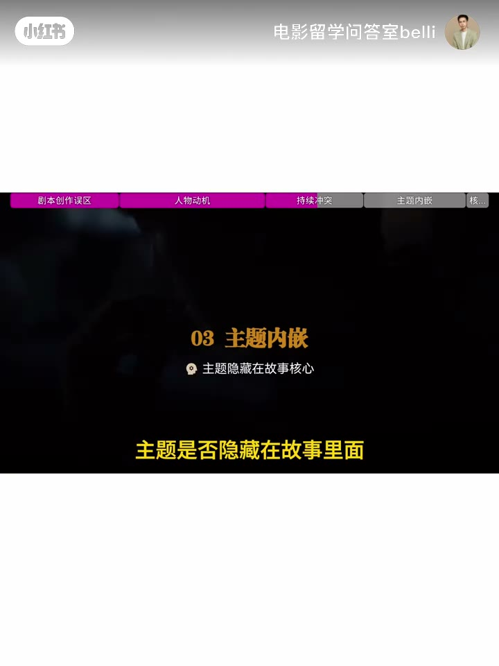
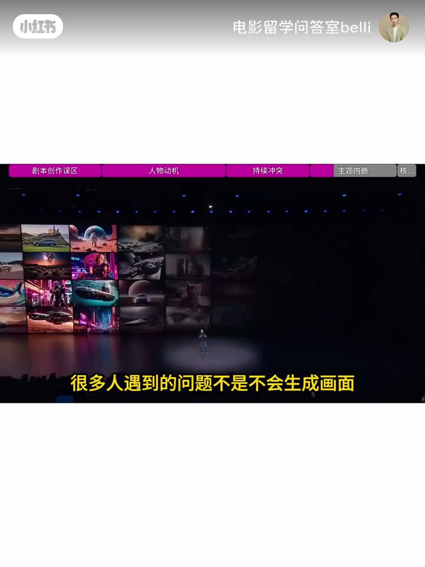

内容要点
写完剧本，很多人第一反应是「有没有创意」。专业创作者先问：有没有观众缘？剧本完成后不会立刻开拍——编剧、导演、制片人会反复判断：故事是否成立、人物是否可信、戏剧动力够不够、市场能否接受、值不值得投入时间。这个过程叫 script evaluation（剧本评估）。设定新、世界观大
人物有没有真正的欲望？若只是被剧情推动，他就只是工具人。好剧本里人物必须主动选择。科学家发现改变世界的技术——设定吸引人，但真正决定故事价值的是：为什么是他？他想证明什么？害怕失去什么？若去掉这个人物故事仍成立，说明人物还不够重要。
新人剧本常「开头好、设定吸引，三分钟后人物不知还能做什么」——因为冲突只是一个事件，不是持续的问题。好剧本不是发生一件大事，而是人物必须不断面对选择。
优秀电影不只传递画面，而是通过人物命运让观众自己感受到内涵。AI 故事表面可能讲「会否取代人类」，深层或许在问：人在拥有越来越强的工具后，如何重新定义自身价值。AIGC 创作者大量进入影视后，常见问题不是不会生成画面，而是：有画面没故事、有概念没人物、有提示词没戏剧。AI 降低了
合格剧本的标准不是想法够不够大，而是人物、冲突、主题是否共同推动一个不可替代的故事。下集继续拆解：为什么很多剧本看起来很好，却永远做不成好电影。
合格剧本不看设定够不够炸，而看三点是否成立：人物有主动欲望、冲突能持续推动选择、主题藏在命运里。AI 时代画面变便宜，剧本判断能力反而更稀缺。
00:00–00:37先别问创意：问有没有观众缘
写完剧本，很多人第一反应是「有没有创意」。专业创作者先问：有没有观众缘？剧本完成后不会立刻开拍——编剧、导演、制片人会反复判断：故事是否成立、人物是否可信、戏剧动力够不够、市场能否接受、值不值得投入时间。这个过程叫 script evaluation（剧本评估）。设定新、世界观大、反转精彩，都只是表层。
00:37–01:15标准一：人物动机 Character Motivation
人物有没有真正的欲望？若只是被剧情推动，他就只是工具人。好剧本里人物必须主动选择。科学家发现改变世界的技术——设定吸引人，但真正决定故事价值的是：为什么是他？他想证明什么？害怕失去什么？若去掉这个人物故事仍成立，说明人物还不够重要。
01:15–01:33标准二：冲突要有持续推动力
新人剧本常「开头好、设定吸引，三分钟后人物不知还能做什么」——因为冲突只是一个事件，不是持续的问题。好剧本不是发生一件大事，而是人物必须不断面对选择。

01:33–02:12标准三：主题藏在故事里（及 AIGC 启示）
优秀电影不只传递画面，而是通过人物命运让观众自己感受到内涵。AI 故事表面可能讲「会否取代人类」，深层或许在问：人在拥有越来越强的工具后，如何重新定义自身价值。AIGC 创作者大量进入影视后，常见问题不是不会生成画面，而是：有画面没故事、有概念没人物、有提示词没戏剧。AI 降低了视觉门槛，剧本判断能力反而更重要——未来漂亮画面人人可做，稀缺的是「为什么这个故事与人物值得出现」。
02:12–02:28合格标准：人物·冲突·主题共推不可替代故事
合格剧本的标准不是想法够不够大，而是人物、冲突、主题是否共同推动一个不可替代的故事。下集继续拆解：为什么很多剧本看起来很好，却永远做不成好电影。

完整转录（69段）
Whisper medium · 中文 · 已转简体，可能有识别误差。
电影问答室剧本深度专题上,一个剧本到底合不合格
电影学院常用三点剧本评估标准,script evaluation
判断一个片子值不值得做
很多人写完一个剧本,第一反应是
这个故事有没有创意
但专业电影创作者首先问的不是创意
而是,这个故事有没有观众缘
在电影行业里,一个剧本完成以后
并不会马上进入制作、编剧、导演、制片人会不断判断
打磨很久,这个故事是否成立
人物是否可信,戏剧动力是否足够
观众市场能否接受
他是否值得投入时间去制作
这个过程叫script evaluation,剧本评估
很多人评价一个故事
第一反应是,设定很新,世界观很大
反转很精彩,但这些只是表层
真正成熟的剧本判断,通常会看三个更核心的问题
人物有没有真正的欲望
英文叫character motivation
一个人物如果只是被剧情推动
他就像一个工具
但好的剧本里,人物必须主动选择
比如,一个科学家发现了一项改变世界的技术
这个设定很吸引人
但真正决定故事价值的问题是
为什么是他
他想证明什么
他害怕失去什么
如果去掉这个人物
故事还成立吗
如果成立,说明人物还不够重要
第二点,冲突是否具有持续推动力
很多新人剧本的问题
开头很好
设定很吸引人
但是三分钟以后
不知道人物还能做什么
因为冲突只是一个事件
不是一个持续的问题
好的剧本不是发生了一件大事
而是,这个人物必须不断面对选择
第三点,主题是否隐藏在故事里面
优秀电影不会只是传递画面
它会通过人物命运
让观众自己感受到内涵
比如,一个关于人工智能的故事
表面可能讲AI是否会取代人类
但更深层可能讨论
人在拥有越来越强大的工具之后
如何重新定义自己的价值
这也是为什么现在AIGC创作者
大量进入影视领域后
很多人遇到的问题不是不会生成画面
而是,有画面,没有故事
有概念,没有人物
有提示词,没有戏剧
AI降低了视觉实现门槛
但剧本判断能力反而更加重要
因为未来大家都可能生成漂亮画面
真正稀缺的是
为什么这个故事人物值得出现
所以,一个合格剧本的标准
不是想法够不够大
而是,人物,冲突,主题
是否共同推动一个不可替代的故事
下一集,我们继续拆解
为什么很多剧本看起来很好
却永远做不成好电影